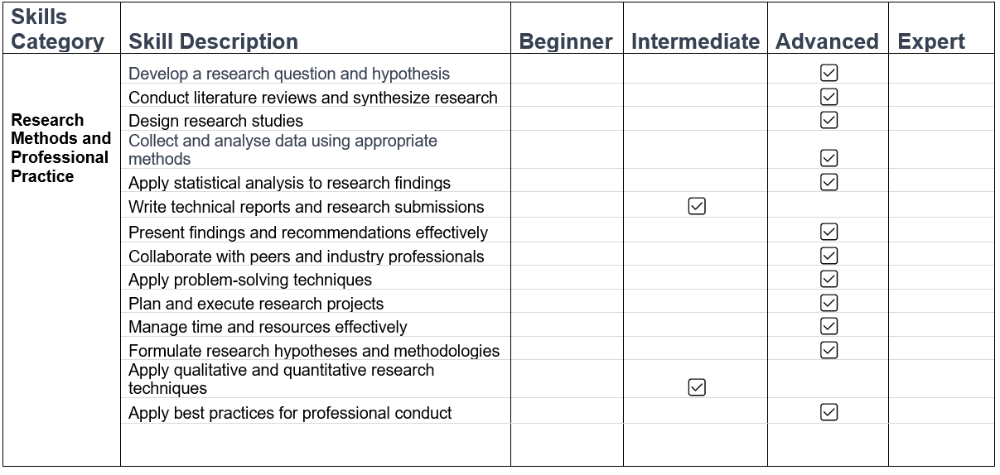

Module #5: Research Methods and Professional Practice
Contents:
- Learning outcomes
- Skills to be gained
- Reflective activity - Ethics in Computing
- Collaborative learning discussion 1
- Reflective Activity - Case Study on Inappropriate Surveys
- Wiki activity - Questionnaires
- Collaborative learning discussion 2
- Literature Review
- Summary Measures and Hypothesis Testing Worksheets
- Qualitative Data Analysis Worksheets
- Research Proposal Presentation
- Skills Matrix and Action Plan
Learning Outcomes:
- Assess the various factors and concerns of a computing professional, including those related to their profession, legal obligations, social impact, cultural aspects, and ethical considerations
- Evaluate and analyze the fundamental principles of academic inquiry and apply them to a specific research topic within the field of computing
- Engage in a thorough and discerning evaluation of existing literature, research design, and methodology relevant to the chosen research topic, including the processes of data analysis
- Generate and critically assess the research proposal that emerges from the chosen research topic, examining it in detail and considering its strengths and weaknesses
Skills to be gained:
- Time management
- Commercial Awareness
- Critical thinking and analysis
- Decision-making
- Problem-solving
- Initiative
- Entrepreneurial
- Communication and Literacy skills
- Numeracy
- IT and Digital
- Interpersonal
- Critical Reflection
- Research
Reflective Piece - Reflections on the Module:
As I reflect upon the completion of this module, I am reminded of the extensive skills and knowledge I have acquired throughout its duration. This module has undeniably played a pivotal role in shaping my comprehension of the intricate realm of technology research and the professional obligations and responsibilities that accompany it. In this reflective piece, I will delve into the key insights and transformations that have emerged from this educational journey.
First and foremost, this module has instilled in me the paramount importance of formulating precise and research-worthy questions. This foundational skill has served as the compass guiding my literature review and refining my research proposal throughout the program. It has become abundantly clear that a well-crafted research question is the bedrock upon which all other aspects of a research project are founded, and upon which a successful paper is written. This perspective aligns with the scholarly wisdom of researchers such as Booth, Colomb, and Williams, who emphasise the centrality of precise questioning in their book "The Craft of Research" (2008).
Moreover, this module places a strong emphasis on the art of conducting comprehensive literature reviews and synthesising research findings. This practice has significantly broadened my horizons, enabling me to navigate through the vast landscape of existing research, thereby equipping me to identify gaps and opportunities for further exploration. The ability to discern cutting-edge areas where I can make meaningful contributions is was invaluable. This emphasis on literature review aligns with the guidance provided by prominent scholars such as Hall in his work "The Postgraduate's Companion" (2008).
Engaging in lectures, discussions, and case studies has heightened my awareness of the multifaceted challenges and responsibilities that confront computing professionals. It has allowed me to appreciate the ethical considerations, and social implications that accompany technological advancements. My understanding resonates with the insights of Johnson, who delves into the ethical dimensions of technology in her book "Computer Ethics" (2009).
The process of designing research studies presented a distinctive challenge for me, as it required me to tap into a complex skillset. However, I discovered that meticulous planning and methodological rigor are indispensable for producing actionable research outcomes. This module has afforded me a deeper understanding of and appreciation for the meticulous work that underlies research design and data collection, aligning with the principles elucidated by scholars such as Leedy and Ormrod in their book "Practical Research: Planning and Design" (2020).
I have come to understand that research proposals serve a multifaceted role. They function as a guiding compass, directing researchers through challenging terrain with ethical considerations and validations, and the delicate balance of technology and ethics.
Furthermore, my exploration of this module has unveiled the significance of data quality and availability. This aspect closely resembles a treasure hunt, particularly in the context of real-time data collection from physical front-shop environments. Within this quest, the persistent specters of data noise and bias lurk, demanding vigilance and meticulous curation to safeguard against any distortion of the invaluable insights we seek to uncover.
To overcome some of the research proposal presentation hurdles, I used various strategic approaches, such as:
- Learning the power and necessity of clear and concise language. By simplifying complex concepts into easily digestible terms, ensures the message is easily communicated to, and resonates with, the audience.
- Weaving narratives into relatable content, drawing the audience into the world of real-time customer experience tracking and sentiment analysis.
- Visuals are a potent tool. I have harnessed the magic of graphics to break down intricate ideas. These visuals serve as guides, helping my audience navigate the depths of my research.
- Real-world examples breathe life into theory. I have also learnt to incorporate these practical scenarios, showcasing how sentiment analysis can be applied in everyday situations.
- Practice, practice, practice. In rehearsing my presentation numerous times and with each run-through, refined delivery and timing, ensuring messages are conveyed effectively.
Perhaps one of the most significant takeaways from this module has been the refinement of my communication and literature scripting skills within the academic context. The ability to convey ideas effectively to both technical and non-technical audiences has proven to be indispensable. Engaging in collaborative discussions and participating in peer reviews with fellow students has further solidified my grasp of the core principles that this module aims to impart. By summarising information and sharing insights, I have honed my communication skills and have become increasingly adept at explaining intricate concepts in a clear and accessible manner.
Throughout all of this, the invaluable feedback of the knowledgeable course instructor served as a guiding voice with which to navigate this intricate field. I admit that I was in awe as to how she manages to carefully go through the submissions of so many students, and yet still meticulously provide precise and detailed feedback. I deeply appreciate her tireless efforts in helping to improve my learning journey.
In summary, this module has induced a profound transformation on my perspective on research methodologies, advanced analytical techniques, and professional standards within the realm of technology research. A standout aspect of this educational journey was the opportunity to create and critically evaluate research proposals. Through this experience, I have developed a deeper comprehension of the challenges within this field and a heightened appreciation for the indispensable role that research plays in addressing them.
The skills and knowledge I have acquired through this module will undoubtedly have a lasting impact on shaping my academic goals and aspirations. It has equipped me with the tools and insights needed to contribute meaningfully to the ever-evolving landscape of technology research and innovation.
References
Booth, W. C., Colomb, G. G., & Williams, J. M. (2008). The craft of research (3rd ed.). University of Chicago Press.
Hall, G. (2008). The postgraduate’s companion. Sage Publications.
Johnson, D. G. (2009). Computer ethics: United States edition (4th ed.). Pearson.
Leedy, P. D., & Ormrod, J. (2020). Practical research: Planning and design, global edition (12th ed.). Pearson Education.
Reflective activity - Ethics in Computing:
This activity aimed to induce reflection on the ethics of computing, which is, unfortunately, an aspect of computing that receives hardly any attention. The task involved placing oneself in the shoes of a computing professional working at an arbitrary company, and examining the effect of ethical issues on that role in the company, as well as reflecting on the actions that could be taken in response to those issues.
This activity was one of the first activities in the module and centered on the ethics of computing which provided me with crucial insights and skills. I got introduced to, and developed a heightened awareness of, the ethical challenges that computing professionals can encounter in their roles, including issues related to data privacy, security, and social responsibility. This exercise honed my ability to identify ethical dilemmas, assess their impact on both individuals and the organization, and consider appropriate courses of action. It reinforced the significance of ethical decision-making and the role of professional codes of conduct in guiding behavior. These insights and skills will guided me in navigating complex ethical issues and promoting responsible computing practices, which continued to be themes across the module.
Collaborative learning discussion 1:
This amazing exercise involved: picking a case study from the examples provided by the Association of Computing Machinery (ACM); reviewing and applying the ethics code to the case study selected, making sure to point out the impact on relevant legal and social issues; and considering issues of professionalism of the computing professionals involved in the case study, making sure to draw comparisons to the Code of Conduct of the British Computer Society (BCS). All this considered, the aim was to draw up an initial posting of at least 200 words long for review by peers in the course.
The domain that I found fascinating was that of medical implants, as it has so much potential for good, but at the same time, is a field with complex and far-reaching ethical and legal considerations. During my exploration of the ethical considerations surrounding medical implants, I gained valuable insights and skills related to the application of ethical codes, legal implications, social impact, and professionalism of computing professionals. First and foremost, I learnt the significance of applying ethical principles in the development and use of medical implants. The British Computer Society (BCS) Code of Conduct emphasizes the responsibility of computing professionals to prioritize the well-being and safety of individuals and society when designing and implementing technological solutions. This aligns with the ethical principles in the medical field, where patient welfare is paramount.
I also discovered the complex legal landscape surrounding
medical implants, which can vary from one jurisdiction to
another. Understanding the legal requirements and regulations
applicable to medical devices is crucial to ensure compliance
and minimize legal risks. Additionally, I recognized that
staying informed about evolving legal frameworks is an essential
skill for computing professionals involved in this domain.
Moreover, I became aware of the profound societal implications
of medical implants. They can significantly improve patients'
quality of life but also raise concerns about privacy, security,
and accessibility. Computing professionals must be attuned to
these societal factors and work collaboratively with healthcare
experts to address them effectively. Lastly, professionalism in
this context entails not only technical competence but also a
commitment to ethical conduct, ongoing education, and a
collaborative approach to solve complex problems. The BCS Code
of Conduct highlights these aspects, emphasizing the importance
of continuous professional development and ethical behavior.
Below are the artefacts produced during this task.
- This is my initial post on the topic
- Peer response to my post
- This is the summary post that includes feedback from my peer
I also had the priviledge of responding to my peers' posts as below. Engaging with my peers' posts on other topics and their ethical considerations provided me with additional insights and skills, and essentially helped pool together a whole host of research across the group. By reading their perspectives, I gained a broader understanding of the various ethical dilemmas and legal nuances associated with this field. Furthermore, the discussions with my peers allowed me to refine my communication skills, as I had to articulate my viewpoints clearly and respectfully when providing feedback or engaging in debates. This experience enhanced my ability to collaborate effectively with diverse stakeholders in addressing complex ethical and legal issues in computing.
- My response to a post on the ethics of content filtering
- My response to another post (by a different peer) on the ethics of content filtering
- My response to a post on the ethics of dark UX patterns
Reflective Activity - Case Study on Inappropriate Surveys:
This was another thought-provoking reflective activity on the topic of inappropriate surveys. Inappropriate surveys have made International headlines and are very important to discuss.
Creating a case study on inappropriate surveys was a valuable learning experience that enriched my insights and skills in several ways. First, researching and compiling the case study allowed me to develop a deep understanding of the intricacies of survey design, administration, and ethical considerations. I had to explore real-world examples, academic literature, and best practices to construct a comprehensive and informative case.
Second, this task sharpened my critical thinking skills as I had to evaluate the ethical dilemmas, potential biases, and consequences associated with inappropriate surveys. It required me to analyze situations from multiple perspectives, considering the impact on respondents, organizations, and the broader community.
Additionally, writing the case study enhanced my communication skills. I had to once again present complex information in a clear and concise manner, ensuring that the ethical issues and their implications were effectively conveyed to the reader.
Finally, this exercise emphasized the importance of ethical research and survey practices. It underscored the responsibility we have as computing professionals to ensure that data collection methods are respectful, fair, and aligned with ethical principles.
Below is a case study I wrote on this topic:
Wiki Activity: Questionnaires:
This was a fascinating and thought provoking activity that required us to put into practice the information gathered in Unit 6 involving the design of questionnaires. Questionnaires are invaluable element in research; they are used to gather data from research participants. The design of questionnaires is crucial to effective data analysis; a poorly designed questionnaire will result in data that is difficult to analyse and/or interprete.
My contribution to this Wiki activity can be found here.
Analyzing and critiquing the questionnaire design in this activity was a valuable exercise that enhanced my insights and skills related to effective survey research. It underscored the importance of careful questionnaire construction in gathering meaningful data. I learnt to evaluate the relevance and clarity of each question, considering whether they aligned with the research objectives. Additionally, I honed my ability to identify biases, leading questions, or ambiguities that could compromise data quality.
Furthermore, this task encouraged me to think critically about survey formatting, including the logical flow of questions and the use of response scales. It highlighted the significance of creating a user-friendly and engaging survey instrument to encourage participant cooperation and accurate responses.
Sharing my analysis with peers on the wiki allowed for constructive feedback and diverse perspectives, enriching my understanding of questionnaire design principles. Overall, this experience deepened my appreciation for the intricacies of designing effective surveys, a skill set that I believe will be invaluable in both research and professional contexts.
Collaborative learning discussion 2:
This was the second amazing collaborative exercise that involved a deeply thought-provoking activity in the form of a scenario involving a researcher that finds themselves in a difficult ethical situation: arriving at results that are unfavourable to their employer. Engaging with the ethical dilemmas presented in the case study involving Abi, the researcher and statistical programmer, has significantly expanded my insights and skills in several crucial areas. First, the task continued on the theme of the complexities of research ethics, particularly the importance of data integrity and honesty in reporting findings. It highlighted the ethical responsibility that researchers have in maintaining the accuracy and credibility of their work, even when the results may not align with the interests of stakeholders (in the extreme case, an employer).
Additionally, considering the legal implications of Abi's choices underscored the significance of research compliance with local and international regulations. It emphasized the potential legal consequences of manipulating data or presenting biased analyses, further emphasizing the need for ethical research conduct. The case study also shed light on the social impact of unethical research practices. Misleading data analysis not only harms public trust but also potentially endangers consumers' health in this context. It reinforced the broader societal implications of ethical lapses in research.
Furthermore, the discussion around Abi's professional responsibilities emphasized the importance of upholding ethical standards within one's field. It made me reflect on the role of professional codes of conduct, such as those from statistical and research organizations, in guiding ethical behavior. In conclusion, this task deepened my understanding of the multifaceted nature of ethical dilemmas in research and the far-reaching consequences of unethical conduct. It reinforced the importance of integrity, transparency, and ethical decision-making in the realm of research and professional practice, skills that I will carry with me in my academic and professional journey.
- This is my initial post on the topic
- Peer responses to my post
- This is the summary post that includes feedback from my peer
And once again, a key part of the collaborative discussion involved engaging with my peers' posts on the same topic, which was a very clever way of pooling together findings and perspectives, thereby acting as a significant boost to our learning. While I had formulated my own ideas on the topic, reading through my peers' responses was a thought-provoking experience that provided alternate viewpoints and new dimensions for thought. My responses to my peers are as below:
Literature Review:
A critical part of any research project is a literature review. The literature review is instrumental in uncovering work that has been done in a particular field. This helps determine gaps and potential areas which can be undertaken. The review also help provide crucial context to the research by providing an underpinning against which to compare results and artefacts produced in the research.
In formulating my literature review, I first formulated an outline which I submitted for feedback. Below are the outline I submitted and subsequent feedback I received.
Two main points of consideration in the feedback were to: to try to focus the literature review as much as possible; and to be consistent with mentioning 'pros' and 'cons' throughout the review. Accordingly, the following final literature review submission was formulated:
Overall, the literature review was very well received, with mostly 'Excellent' outcomes. Some of the points of feedback were to try to completely use my own academic voice to avoid any in-text matches via Turnitin; and work towards developing even more critical discussion by carrying and comparing ideas across paragraphs.
Writing a literature review has been a deeply enlightening experience, enriching my insights and honing essential skills, including: finding a salient topic, engaging with academic sources; pruning the large quantity of academic sources to find those that are most relevant; organising the knowledge in a logical and sensible manner; writing up the information in a similarly logical and sensible manner; and using the information to identify gaps and salient areas for future research . Through this task, I've developed a deep understanding of the existing research landscape on the chosen topic, but more importantly, on undertaking this activity in any field. I've learnt to critically evaluate scholarly articles, identify key trends, and synthesize findings effectively. This process has refined my research skills, enabling me to navigate vast academic literature efficiently. Moreover, crafting a literature review has strengthened my ability to structure and organize complex information coherently, enhancing my writing and communication skills. These insights and skills will undoubtedly benefit me in future academic endeavors, research projects, and professional contexts, allowing me to contribute meaningfully to the scholarly discourse. While I think these trends are probably similar across all the students, I personally benefitted from being submerged into the world of research after decades of being in industry, and this was very fulfilling.
Summary Measures and Hypothesis Testing Worksheets:
Unit 8 was an extremely useful deep-dive into the use of statistics to be able to scientifically test and verify (or reject) beliefs. I learnt a whole lot here, to be honest. I had always heard of a range of concepts like statistical tests, hypotheses, p-values etc., and this finally demystified me on these concepts. I especially felt fulfilled when I understood (after having heard these terms numerous times in the past) two-tailed and one-tailed test results. I gained a deep understanding of how to summarize and interpret data effectively, including measures of central tendency and variability. Moreover, I acquired the ability to apply inferential statistics to draw meaningful conclusions from limited sample data. This involved hypothesis formulation, selecting appropriate statistical tests, and interpreting p-values and confidence intervals. These skills have empowered me to make data-driven decisions and critically evaluate research findings, enhancing my analytical and problem-solving capabilities, which are invaluable in various academic and professional domains where data analysis is essential. To be honest, I now look at data sets a bit differently; I find myself immediately thinking about the hypotheses that can be formulated and how I can set about proving (or disproving) them.
I can't say that I feel like an expert thought, since my research when trying to get through this task revealed a whole host of further intricacies involved ,which I'm interested to delve into.
I initially submitted only my document with my analyses on all Unit 8 worksheet tasks but didn't submit the worksheets. Our knowledgeable course instructor then provided valuable formative feedback. The main point of improvement was to add in the graphs (and I assume results) in the worksheets into the document with my analyses, which I did.
Below, are the extremely useful and systematic worksheets given to us, along with my final document with analyses that includes the graphs and results, to work through to set the concepts in stone:
- This is a document with my analyses on all of the Unit 8 worksheets.
- Exercise 8.1 Worksheet
- Exercise 8.2 Worksheet
- Exercise 8.3 Worksheet
- Exercise 8.4 Worksheet
- Exercise 8.6 Worksheet
Qualitative Data Analysis Worksheets:
Unit 9 picked up where Unit 8 left off, with a detailed and systematic description of techniques to visualise data. Data visualisation is a key and crucial part of data analysis, since correct/effective visualisation of data allows for the researcher to quickly observe trends and carry out comparisons. This has been instrumental in enhancing my insights and skills related to effectively conveying information through graphical representation, and I was very impressed with how well the two units (8 and 9) went hand-in-hand and how well-thought-out and well-structured they were. I've learnt how to choose the most suitable visualizations for different types of data, such as bar charts and histograms plots to reveal patterns and trends efficiently. Additionally, I gained an understanding of the principles of good data visualization, including clarity, accuracy, and context. This knowledge has empowered me to present data in a more engaging and informative manner, aiding in rapid trend identification and facilitating effective communication in both research and professional contexts. The ability to harness data visualization tools and techniques is invaluable for making data-driven decisions and insights. Here, again, I don't feel at all like an expert, but this has been an excellent start to a journey in the field of data analysis and visualisation.
As with Unit 8, I initially submitted only my Unit 9 analysis document which didn't have any of the worksheet results or graphs in it; I didn't submit the worksheets. Our knowledgeable course instructor then provided valuable formative feedback and, as with Unit 8, the main point of improvement was to add in the graphs (and I assume results) in the worksheets into the document with my analyses, which I did.
Below, are the brilliant systematic worksheets provided to us, along with my final analysis document which includes the graphs and results:
- This is a document with my analyses on all of the Unit 8 worksheets.
- Exercise 9.1 Worksheet
- Exercise 9.2 Worksheet
- Exercise 9.3 Worksheet
Research Proposal Presentation:
This task gave me excellent practice into designing and presenting a research proposal, and it was a perfect integration of all previous concepts discussed in the module. Among other things, it required for a formulation of a research problem, a literature review, and careful consideration of the intended experimentation. I decided to align closely to the topic that I had chosen for my literature review (namely, sentiment analysis using deep learning) since I had developed a good understanding of that field. However, I decided to streamline and focus the topic into a specific domain and I settled on "Real-Time Customer Experience Tracking in Front-Shops using Deep Sentiment Analysis".
This is a specific area of sentiment analysis that aims to harness deep learning models to assist businesses in tracking their customer experience (CX) perception. This has been done at scale to track business' CX at a large scale, but studies attempting this at a more fine-grained level to determine how their front-shops are performing are rare. Below, you can find my final presentation, along with my manuscript
I admit that this task was extremely challenging specifically because of the time limit. There was a LOT to say and very limited time. I initially had a manuscript with close to 2300 words. When I tried to narrate this onto the slides, I took close to 50 minutes!!! Needless to say, I began to cut down the manuscript significantly, each time narrating over the slides. Strategising areas to cut down was very challenging. Every section seemed no less important than any other section... When it came to the related work slides, I tried to retain as much of the theory in these slide as I could.
Ultimately, I ended up recording and re-recording the manuscript some 30 - 40 times!!
I received valuable feedback from the course instructor. The main points for improvement were:
- To try to draw more theory into the presentation. As mentioned previously, I did try to do this, but the time limit made this challenging. This just demonstrates how much of an important exercise this actually was! Presentations in real life will always have time limits, and learning to say everything concisely is a critical skill to have.
- To work on my voice intonation while presenting. Here again, I admit that, after having redone the narration some 30 to 40 times, I was exhausted and this led to the voice intonation in the slides. I will improve!
Skills Matrix and Action Plan:
Below is a skills matrix summarising the skills I've learnt and areas where I need to focus on for improvement. This amazing module has provided me with a series of invaluable skills, although I would not consider myself anywhere close to Expert level yet. I'm looking forward to the capstone to further develop a lot of these skills.
Below is my action plan for improving on key areas:
1. Improve proficiency in data analysis techniques:
- Practice data analysis with real-world datasets.
- Seek guidance from professors or peers on advanced analysis methods.
2. Enhance knowledge of qualitative research methods:
- Read research papers and books on qualitative research methodologies.
- Collaborate with peers who specialize in this area.
3. Develop stronger interpersonal and communication skills:
- Participate in seminars and engage with tutors and peers.
4. Continuously assess and update the Professional Skills Matrix and Personal Development Plan (PDP):
- Regularly review and revise the matrix based on skill development.
- Set new goals and priorities in the PDP as skills improve and career goals evolve.
5. Seek mentorship and feedback:
- Identify a mentor in the field of cyber security or research.
- Request feedback from professors, mentors, or peers on projects and presentations.